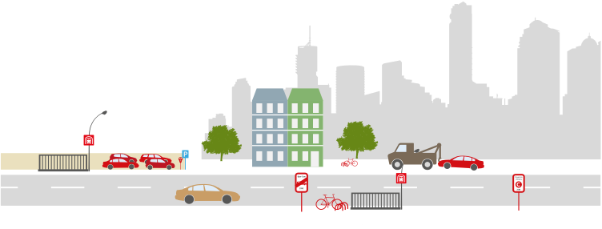

Problem statement: How much should I earn based on my experience?
Predict a continuous dependent variable from a number of independent variables using a regression model.
Data transformation and machine learning to create a model that predicts a salary based on: country of residence, profession (job type), education level and years of experience.
Create a User Interface (Web App) using streamlit and deploying it, which the end-users can input data and then get the predicted salary as the output.

Data exploration using PostgreSQL database to answer questions regards infections, deaths and vaccinations.
Using pandas and sqlalchemy libraries to create connection and read SQL queries.
Visualization the queries in a dashboard using Tableau.

Working with real data using Youtube API to collect video statistics from a channel (in this case from freeCodeCamp).
Using the library requests to make the API calls and parsing the data through the JSON response.
Storing and updating the data fetched into a PostgreSQL Database.
Cleaning, filtering and visualizing the data.

Exploratory Data Analysis using Pandas, Numpy, Matplotlib and Seaborn and a Linear Regression model built using TensorFlow and Keras to predict the probability of slowness in traffic based on multiple inputs such as, vehicle excess, broken truck, lack of eletricity and so on in a certain hour and day.

Scraping the data from Wikipedia page of all Super Nintendo Entertainment System (SNES) games.
The dataset contains a list of 1757 official releases games, which contains title games, developer(s), publisher(s) and the release date for different regions (Japan, North America and PAL).
The Python libraries used in this project was MechanicalSoup for web scraping and for analysis were Pandas, Numpy, Matplotlib and Seaborn.

Getting insights from the data to understand some correlations in order to increase the store profits.
Exploring the sales by their product types, costs, purchase city, time of the year and time of purchase.
A sales dashboard was built in Python with the Streamlit and Plotly libraries and also deployed using Heroku.
Classify 7 Brazilian soccer players using 2 different approaches:
- Applying Haar cascades for face and eyes detection in order to train and test our model as well as creating a web server and a website to make new predictions.
- Using Tensorflow and Keras to create a Convolutional Neural Network (CNN).
- Making a performace comparison of both models.